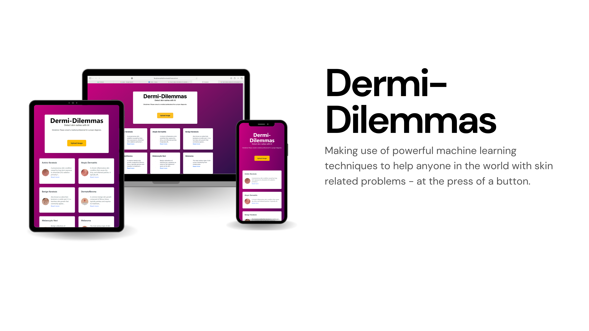

Deri-Dilemmas
Inspiration
About a month ago, when I had a rapidly developing rash on my upper thigh, I didn't know what to do and took a photo of the rash to send to my mum. My mum, a trained nurse, helped him through the process - and always has. The inspiration for this project was to help people not so fortunate as myself who might not have a trained medical professional in the family.
What it does
The user will upload an image of their skin disease, and if the machine learning model determines they have one of the 9 skin diseases we are checking for, then it will highlight their problem, give them an overview of what they have, and provide an NHS link for more information.